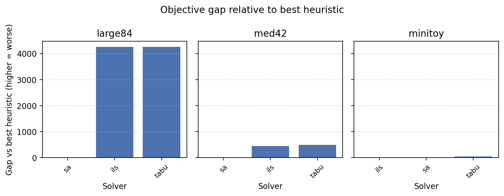
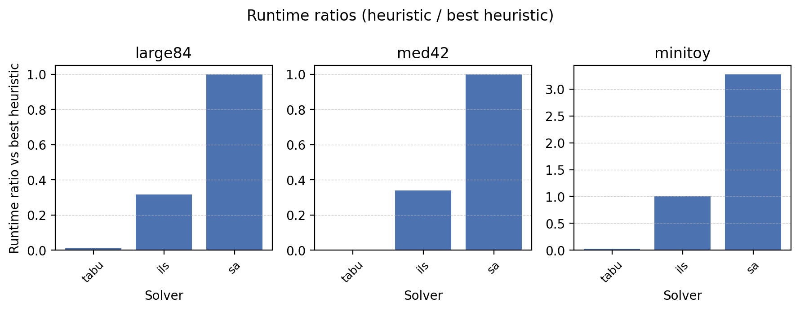

Benchmarking Harness
FHOPS ships sample scenarios in examples/ (tiny7, med42, large84, and the synthetic
tiers under examples/synthetic/) that cover
increasing planning horizons. The Phase 2 benchmarking harness runs the MIP and heuristic
solvers across these datasets, captures objectives/KPIs, and stores results for inspection.
Quick Start
These runs are long-running (budget minutes to hours): without --scenario the suite solves every
default scenario with the default budgets (MILP --time-limit 1800 s per scenario; the time limit
covers the solve only, and the large84 operational MILP run did not finish within 13 minutes and used
~10 GB of memory even with --time-limit 5). For a quick check, pass
--scenario examples/tiny7/scenario.yaml or --no-include-mip with small --sa-iters /
--ils-iters / --tabu-iters values.
fhops bench suite --out-dir tmp/benchmarks
fhops bench suite --scenario examples/tiny7/scenario.yaml --scenario examples/med42/scenario.yaml --out-dir tmp/benchmarks_med
fhops bench suite --scenario examples/large84/scenario.yaml --out-dir tmp/benchmarks_large --time-limit 180 --no-include-sa
fhops bench suite --scenario examples/synthetic/small/scenario.yaml --out-dir tmp/benchmarks_synth --sa-iters 200 --no-include-mip
fhops bench suite --include-ils --include-tabu --out-dir tmp/benchmarks_compare
This command:
loads each bundled scenario (tiny7 → med42 → large84 → synthetic-small by default),
solves them with the MIP (HiGHS) and simulated annealing using default limits, and
writes a summary table to
tmp/benchmarks/summary.{csv,json}alongside per-solver assignment exports (mip_assignments.csv,sa_assignments.csv).
CLI Options
fhops bench suite accepts a number of flags:
--scenario/-s— add one or more custom scenario YAML paths. When omitted the built-in scenarios are used.--time-limit— HiGHS time limit in seconds (default: 1800 for the large84 horizon). The quick-start example above still shows--time-limit 180for a smoke run; omit that flag to use the higher default when you want optimal certificates on the largest instance.--sa-iters/--sa-seed— simulated annealing iteration budget and RNG seed.--driver— operational MILP solver (highsdefault,gurobi, orauto: Gurobi when it runs, otherwise HiGHS; legacy names such ashighs-appsi/gurobi-directare accepted).--include-mip/--include-sa— toggle individual solvers when running experiments.--out-dir— destination for summary files (default:tmp/benchmarks).
Watching heuristic progress
All heuristic entry points (fhops solve-heur, fhops solve-ils, fhops solve-tabu,
fhops tune-*, and fhops bench suite) accept --watch/--no-watch plus
--watch-refresh <seconds>. When enabled, FHOPS renders a Rich dashboard showing the shared
metrics (scenario, solver, iteration, best/current/rolling objective, runtime, restarts/workers) and
a solver-specific detail row (SA temperature/acceptance, ILS perturbations, Tabu tenure).
Example (long-running: 200 000 SA iterations on med42 take several minutes):
fhops solve-heur examples/med42/scenario.yaml \
--out tmp/med42_sa_watch.csv \
--iters 200000 \
--cooling-rate 0.99999 \
--restart-interval 500 \
--watch \
--watch-refresh 0.5
The dashboard refreshes only when stdout is an interactive terminal. CI runs or redirected output
print a single warning (Watch mode disabled: not running in an interactive terminal.) and
continue normally. Adjust --watch-refresh (default 0.5 s) to control update cadence.
The workers column reports the requested parallel workers, but note that
--parallel-workers currently uses Python threads—batch scoring remains GIL-bound. For true
multi-core utilisation, prefer --parallel-multistart or process-level orchestration until the
scoring loop is parallelised.
FAQ – Watch Mode
“Watch mode disabled: not running in an interactive terminal.” The dashboard renders only when stdout is a TTY. If you want both the live view and a log, wrap the command with
script(or run inside tmux/screen) so the subprocess gets a pseudo-terminal:script -q -c "fhops solve-heur ... --watch" /tmp/fhops_watch.log
The terminal shows the dashboard; the log captures the CLI text emitted after completion.
How do I capture a screenshot/GIF? Run a short watch-enabled command (e.g.,
fhops solve-heur examples/tiny7/scenario.yaml --out tmp/tiny7_sa.csv --watch --iters 500) and use a terminal recorder such asasciinemaorttystudio. The sparkline now renders below the main table so column widths stay stable while recording.
Standard Manuscript Pipeline
All experiments cited in the manuscript follow the same FHOPS CLI pipeline so readers can replay each stage without bespoke tooling:
Validate or snapshot scenarios. Run
fhops validate <scenario.yaml>for each bundle (e.g.,examples/tiny7andexamples/med42) and, when needed, snapshot synthetic tiers viafhops synth generate out/synthetic_<tier> --tier <tier> --seed <seed>(one call per tier, fixed RNG seeds).Benchmark solvers. Invoke
fhops bench suitewith explicit--scenarioand--out-dirarguments (for the manuscript:docs/softwarex/assets/data/benchmarks/<slug>/) plus the desired heuristics (--include-ils,--include-tabu) and iteration budgets.Run the tuning harness. Launch
python docs/softwarex/manuscript/scripts/run_tuner.py(which callsscripts/run_tuning_benchmarks.py; wrapped bydocs/softwarex/manuscript/scripts/generate_assets.sh) to produce leaderboard/comparison tables indocs/softwarex/assets/data/tuning/.Replay schedules. Call
fhops eval-playbackon the best SA/ILS assignments (deterministic and stochastic modes) so utilisation and downtime metrics land underdocs/softwarex/assets/data/playback/<scenario>/<solver>/<mode>/.Estimate costs. Execute
fhops dataset estimate-costfor each machine bundle to capture owning/operating/repair totals indocs/softwarex/assets/data/costing/.Synthetic scaling sweep. Use
python docs/softwarex/manuscript/scripts/run_synthetic_sweep.pyto regenerate runtime-vs-size CSV/JSON + plots underdocs/softwarex/assets/data/scaling/.
docs/softwarex/manuscript/scripts/generate_assets.sh runs all six steps with the published budgets and writes repository-relative paths into the assets. Run
through make manuscript-benchmarks (run_manuscript_benchmarks.sh), it appends the commit, asset mode, runtime, and an SHA-256 hash of the committed
asset files to docs/softwarex/assets/benchmark_runs.log, a single provenance log for all artefacts; make verify-assets-hash recomputes the hash.
Optional Gurobi backend (Linux)
HiGHS remains the default open-source MIP solver. If you have access to a Gurobi licence (e.g.
academic named-user), install the optional extras and register the licence before selecting
--driver gurobi:
# install gurobipy alongside FHOPS
pip install fhops[gurobi]
# download the lightweight licence tools bundle (version shown is illustrative)
wget https://packages.gurobi.com/lictools/licensetools13.0.0_linux64.tar.gz
tar xvfz licensetools13.0.0_linux64.tar.gz
# request your licence key (replace XXXXXXXX-XXXX-XXXX-XXXX-XXXXXXXXXXXX)
./grbgetkey XXXXXXXX-XXXX-XXXX-XXXX-XXXXXXXXXXXX
# accept the default path (typically $HOME/gurobi.lic) or specify a custom location
# if you store the licence elsewhere, export GRB_LICENSE_FILE so gurobipy can find it:
export GRB_LICENSE_FILE=/path/to/gurobi.lic
# quick sanity check
python -c "import gurobipy as gp; m = gp.Model(); m.setParam('OutputFlag', 0); m.optimize()"
Once the licence is active, any FHOPS command can use Gurobi by passing --driver gurobi (or the
other Gurobi driver variants). Without an available licence the CLI will fall back to HiGHS.
Interpreting Outputs
The summary CSV/JSON records, per scenario/solver pair:
objective value (incorporating any objective weights); for SA/ILS/Tabu this is the heuristic evaluator’s score of the exported schedule (re-scoring the assignment CSV gives the same value; before 1.0.1 the heuristics could report a higher score than their exported schedule earned, #131),
runtime (wall-clock seconds),
number of assignments in the exported schedule,
key KPIs: total production, mobilisation cost, sequencing violation counts, etc.
For SA runs, iteration budget and RNG seed are included to help compare tuning parameters across experiments.
Comparison helpers:
solver_categorylabels exact vs heuristic solvers.best_heuristic_solver/best_heuristic_objectiveidentify the strongest heuristic per scenario.objective_gap_vs_best_heuristicshows how far each solver trails the top heuristic (negative values mean the solver beats the best heuristic, e.g., MIP).runtime_ratio_vs_best_heuristicreports runtime multiples relative to the quickest heuristic winner.
Objective-weight columns (appended after all other columns since 1.0.1, #140):
objective_weights_source—scenario(scenario weights),auto(built-inAUTO_OBJECTIVE_WEIGHT_OVERRIDES: FHOPS Tiny7/Small21) orexplicit(--objective-weight); MIP rows are alwaysscenario.objective_weight_overrides— the applied overrides as JSON (empty without overrides).objective_scenario_weights— the exported plan scored as planned under the scenario’s own weights (the MILP’s), viaevaluate_assignments; equal toobjectivewithout overrides.objective_scenario_weights_vs_mip_gap— MIP objective minusobjective_scenario_weights(empty without a MIP row).
Comparing MIP and heuristic objectives
objective is the objective each solver optimised. For FHOPS Tiny7 and Small21 the heuristics
apply built-in weight overrides (soft landing capacity, lower mobilisation weight; see
Objective Weights, Automatic Overrides, and Hard Violations), while the MILP uses the scenario weights, so
objective_vs_mip_gap / objective_vs_mip_ratio compare different objectives for those rows.
Use objective_scenario_weights and objective_scenario_weights_vs_mip_gap for a like-for-like
comparison; a heuristic plan that overloads a landing which is hard under the scenario weights is
charged the hard-violation penalty there. The bench suite and fhops benchmark print a
one-line notice whenever overrides apply. fhops benchmark examples/tiny7/scenario.yaml (defaults)
prints:
MIP obj=279.796, SA obj (override weights)=4295.775, SA obj (scenario weights)=-30498.228
Note: Heuristic objective uses built-in weight overrides for FHOPS Tiny7 (production=1, mobilisation=0.2, transitions=0.1, landing_surplus=0.05; scenario weights production=1, mobilisation=0.5, transitions=0, landing_surplus=0); not comparable with MILP objectives.
The SA plan delivers all 4414.70 m³ but puts two machines on a capacity-1 landing in 11 slots: priced at 0.05 per extra machine under its soft-landing override weights, it is infeasible under the scenario’s hard landing capacity (11 × 3147.28 penalty; mobilisation 585.64 at weight 0.5), while the MILP plan respects it.
Operator Telemetry
When running the suite with simulated annealing enabled, the summary CSV/JSON includes an
operators_config column (final weights) and an operators_stats column (per-operator
telemetry). operators_stats is a JSON object recording proposals, accepted moves, skips, weights,
and acceptance rates for each registered operator. Example snippet:
{
"swap": {"proposals": 200, "accepted": 200, "skipped": 0, "weight": 1.0, "acceptance_rate": 1.0},
"move": {"proposals": 200, "accepted": 200, "skipped": 0, "weight": 1.0, "acceptance_rate": 1.0}
}
Use --show-operator-stats with fhops solve-heur for a human-readable table, or parse the
benchmark summaries programmatically to monitor operator performance over time. Persistent telemetry
logs (--telemetry-log) append the same structure to a newline-delimited JSON file for long-term
analysis.
Visual Comparisons
The helper script scripts/render_benchmark_plots.py consumes a benchmark summary and renders
comparison charts for documentation. For example (long-running: heuristics on all default
scenarios with default budgets):
fhops bench suite --include-ils --include-tabu --no-include-mip --out-dir tmp/bench_visuals
python scripts/render_benchmark_plots.py tmp/bench_visuals/summary.csv --out-dir docs/_static/benchmarks

Objective gap versus the best heuristic solver for each scenario (negative bars indicate the solver beats the current best heuristic).

Runtime ratios relative to the best heuristic solver (values > 1.0 are slower).
Note
Regenerate the comparison summary and plots after significant heuristic changes by rerunning
fhops bench suite --include-ils --include-tabu and the plotting helper script.
Each assignment CSV includes machine_id, block_id, day, and shift_id columns.
The shift label is derived from the scenario’s shift calendar or timeline definition, enabling
sub-daily benchmarking and evaluation workflows.
Regression Fixture
tests/fixtures/benchmarks/tiny7_sa.json records the expected seed-42 SA output for the
tiny7 scenario (200 iterations) and is exercised by tests/test_benchmark_harness.py.
Use it as a reference when extending the harness or adjusting solver defaults.
Future Work
Phase 2 follow-up tasks include:
integrating benchmarking plots into the documentation,
adding Tabu/ILS runs as metaheuristics mature, and
calibrating mobilisation penalties against GeoJSON distance inputs.